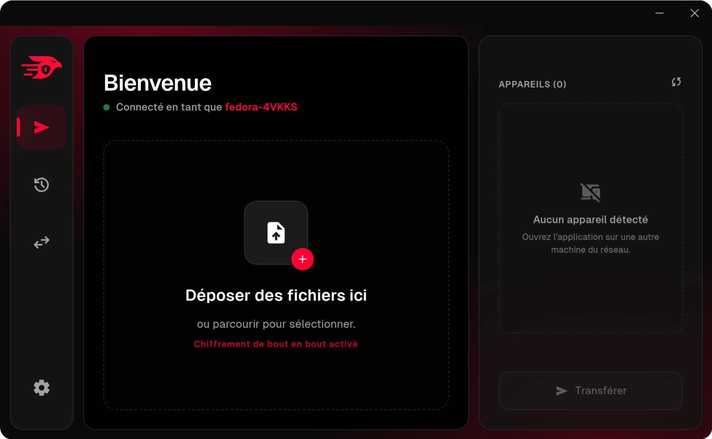
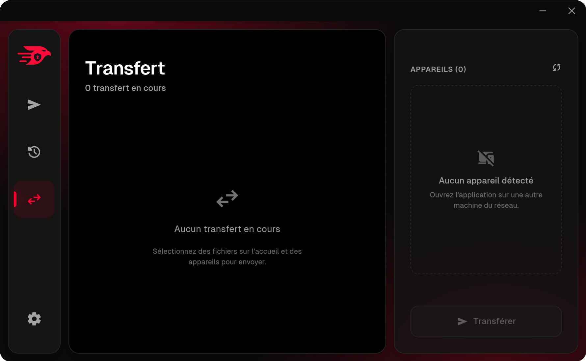
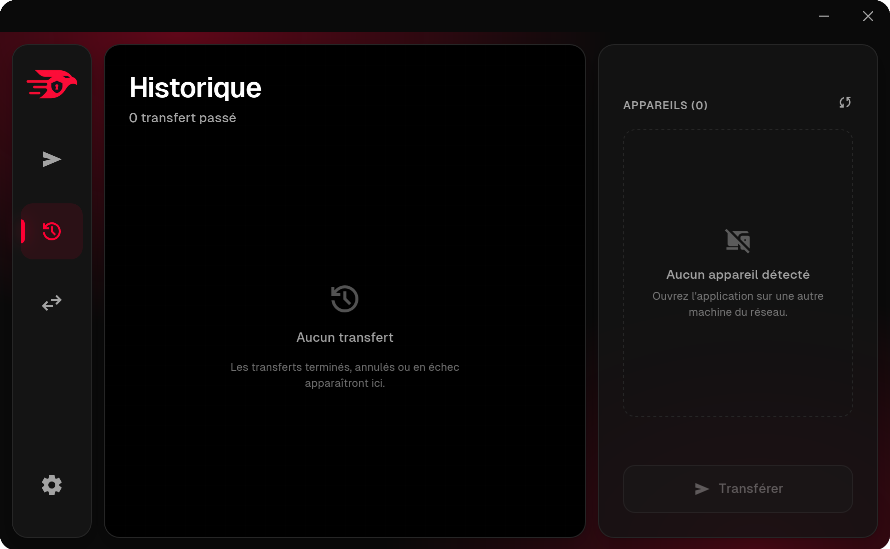
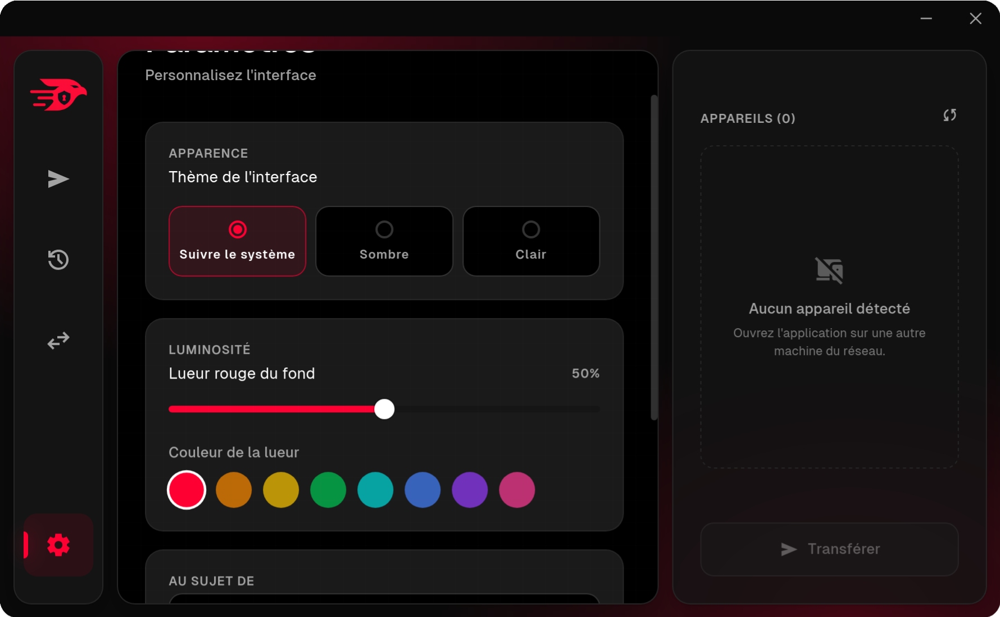

P2P · Réseau local · Chiffré
Envoyez vos fichiers, à la vitesse du réseau.
Toolé détecte les appareils voisins et transfère vos fichiers directement entre machines, sans Internet, sans serveur, sans limite de taille. Chiffré de bout en bout avec QUIC/TLS 1.3.
0 téléchargements cumulés
Gratuit · Open source · Linux · macOS · Windows
Installer Toolé
Une commande, et c'est parti. Détection automatique de votre système.
Script universel (recommandé)
Détecte automatiquement votre gestionnaire de paquets (apt, pacman, dnf).
curl -fsSL
https://raw.githubusercontent.com/TOS-team/Toole/main/install.sh
| sh
Pensé pour le local
Pas de compte, pas de cloud, pas de câble. Juste votre réseau.
Découverte automatique
Les appareils voisins apparaissent seuls, sans configuration ni adresse à taper.
Chiffré de bout en bout
Chaque paquet est chiffré et authentifié par QUIC et TLS 1.3.
À la vitesse du réseau
Des centaines de Mo/s en local, grâce au pipelining des chunks sans attente.
Dossiers conservés
L'arborescence est préservée : un dossier envoyé arrive à l'identique.
Multi-appareils
Envoyez à plusieurs machines en parallèle, sur une même connexion.
Historique local
Vos transferts sont enregistrés en local, avec progression et débit.
Comment ça marche
Deux protocoles, un seul objectif : le transfert direct entre machines.
Découverte
Chaque machine diffuse un message UDP en broadcast. Les voisins répondent et apparaissent dans la liste.
Sélection
Vous déposez des fichiers ou dossiers, cochez un ou plusieurs appareils, puis cliquez Transférer.
Transfert QUIC
Les fichiers sont envoyés par QUIC, chiffrés, par chunks pipelinés jusqu'à 1 Mo, sans ack applicatif.
Réception
Le récepteur écrit dans
Téléchargements/Toolé/
et garde l'arborescence. C'est prêt.
Captures d'écran
L'interface en action.




Documentation
Le guide complet : utilisation, dépannage et fonctionnement interne.
Guide utilisateur
Prise en main, utilisation complète, problèmes fréquents et solutions.
Guide développeur
Comment Toolé fonctionne : architecture, protocole UDP et QUIC, code.
Code source
Le dépôt GitHub : Rust, Tauri, Vue 3. Open source, contributions bienvenues.
Documentation technique complète
Architecture interne, protocole de découverte UDP, détails du transfert QUIC, spécifications du format de données et documentation des API. La référence pour les développeurs qui veulent comprendre ou contribuer.
Accéder à la documentation technique